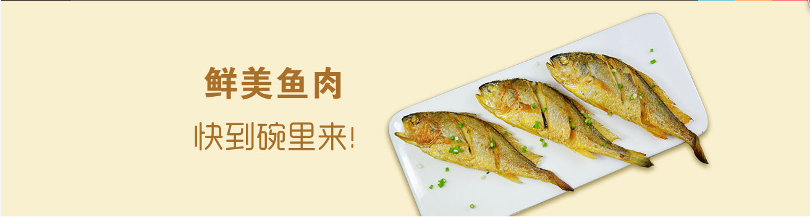

酸菜鱼
材料：草鱼:500克;酸菜:350克;香菜:适量;姜，蒜适量;干辣椒,花椒适量;盐,食用油,胡椒粉
原料，酸菜切碎（我还加了一点酸姜在里面），蒜切片，姜切末，香菜切段，适量的干辣椒和花椒粒。
3.鱼肉用少许盐，胡椒粉和生粉抓一下；鱼骨用盐和胡椒粉抓一下。
4.炒锅下油，爆香蒜片和姜末；蒜片略微发黄时倒入切好的酸菜。炒出香味后加入适量的水或高汤。
5.把鱼骨一起下汤里煮，煮至开锅，开锅后把鱼肉一片一片的下锅划开，盛入大碗里。
6.锅里再下少量的油，小火，炸香花椒和干辣椒，把炸好的花椒油淋在鱼肉上，撒上香菜即可。